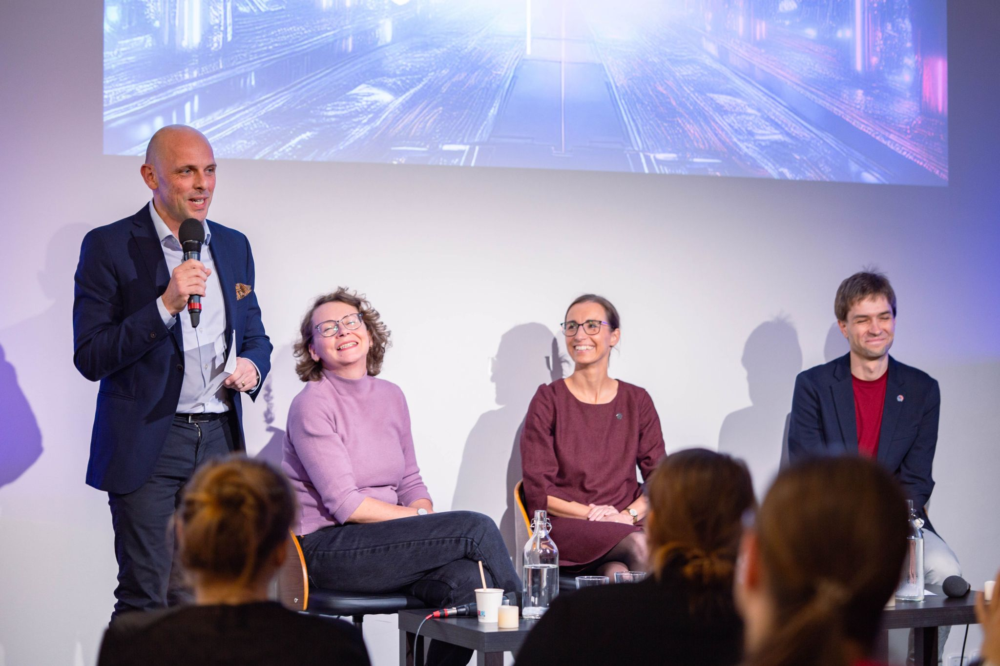
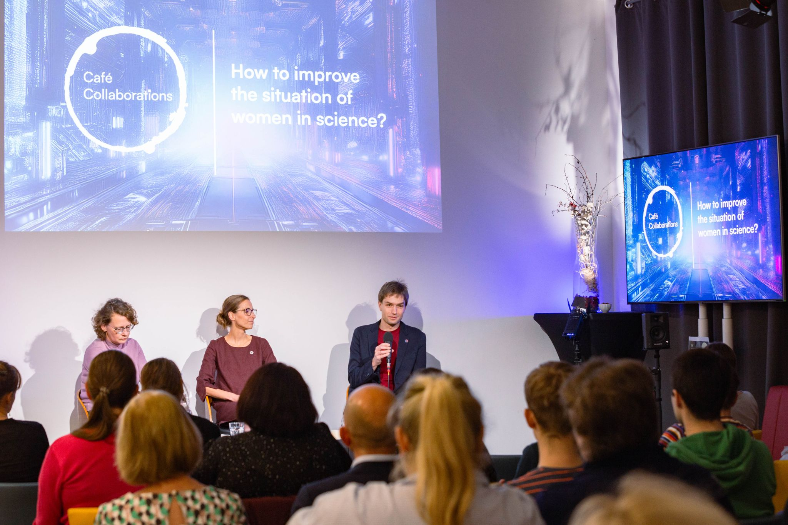
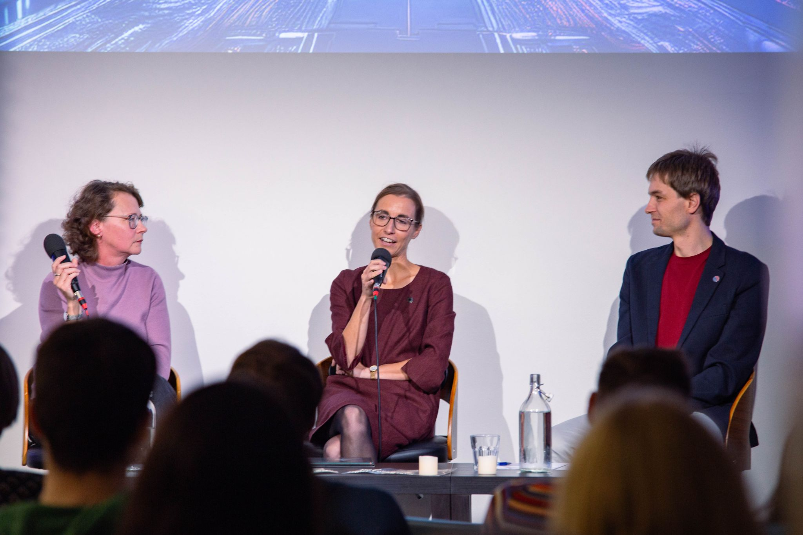

How to support women in science?
Karolína was invited to a debate organized by the German Embassy in Prague as part of a discussion series “Café Collaborations” at Kampus Hybernská in Prague.
It was an honor to be invited to a debate on what we can do to help women stay in science organized by the German Embassy in Prague. The audience was diverse, from equal opportunities officers from Czech scientific institutions (yes, some Czech institutions already have them!) to high school students who are thinking about their future life. I was very happy that they approached me after the discussion to talk more informally and ask questions.
What were the topics that I raised in this context?
  
Self-confidence
When planning theses projects with the students, I see a bias that female students have more doubts whether they succeed in the project compared to their male colleagues. It is very important that we create an environment, starting from early childhood, leading to self-confident students that can assess their abilities, but do not systematically underestimate them. At the university level, this involves inclusive conditions where nobody is afraid to ask questions or say that they do not understand something. It also means that supervisors should care about the students. I see it as my task to plan the project and provide sufficient supervision such that the students will manage if they put appropriate effort in it, so there is no need to be afraid. It is very rewarding to see students excited in their projects and feeling to be part of the team! Yes, you will manage! :)
Role models
It was very important for me to take inspiration from other female scientists who were senior researchers and mothers at the same time. Managing everything perfectly when you are a senior scientist and a mother is simply not possible - sometimes it takes a bit longer to respond to emails, other times you may not manage to read all the papers that you would like to read in detail before a meeting. And yes, you may also forget that your child needs to take on the shoes before leaving the kindergarten (indeed, this happened to me :)). It is very important to learn to prioritize and also to be tolerant to yourself. Role models are invaluable on this journey.
Particularly at the Faculty of Mathematics and Physics where my group is based, it may be difficult to find female role models as the percentage of female faculty members is low. I see this as one of my tasks to support other women in their scientific careers and pass on any experience that may be useful to them. A mentoring programme can serve this purpose very well.
Flexible parental leave
In Germany, where I worked when my children were born, parental leave is very flexible. It is supported that both parents take some time off and they can freely decide who stays at home for how long. It is also possible to take turns, even within a day such that one parent works in the morning and the other in the afternoon. This flexibility eases the situation of women and enables them to stay in touch with the science, while still having enough time for their children. I also took the opportunity to work part time until my children were 3 years old which I greatly enjoyed. In the Czech Republic, the system enforces a very imbalanced splitting of work and childcare beetween the parents which, in my opinion, makes the situation worse for everybody - the children, the parents, the society and also the state. I hope that the Czech society will start appreciating the involvement of both parents in both childcare and work and that the situation will change soon.